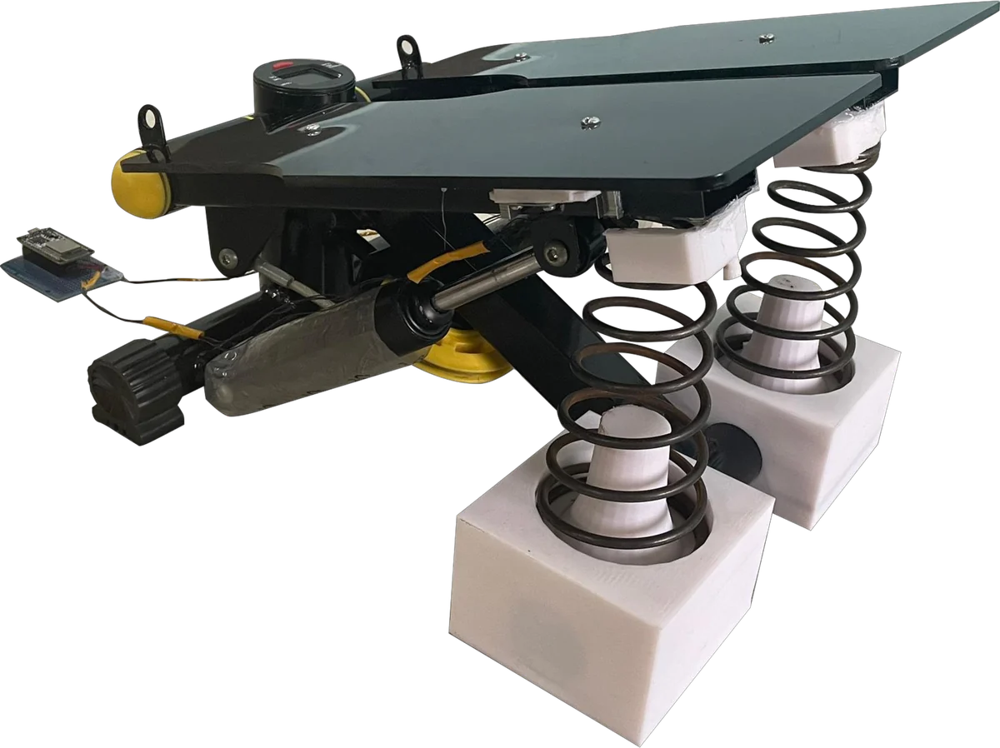
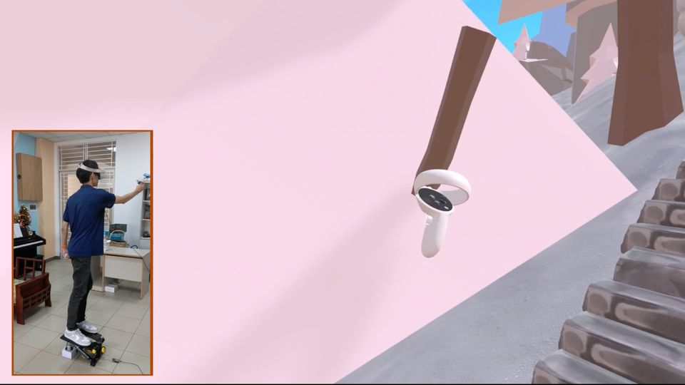
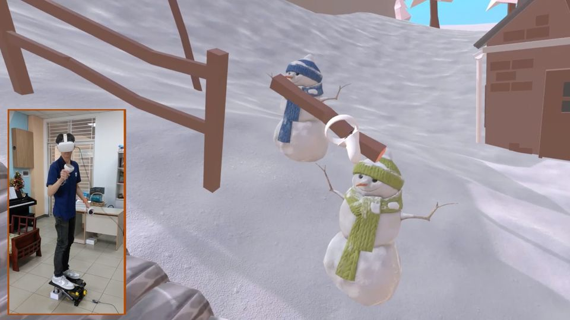
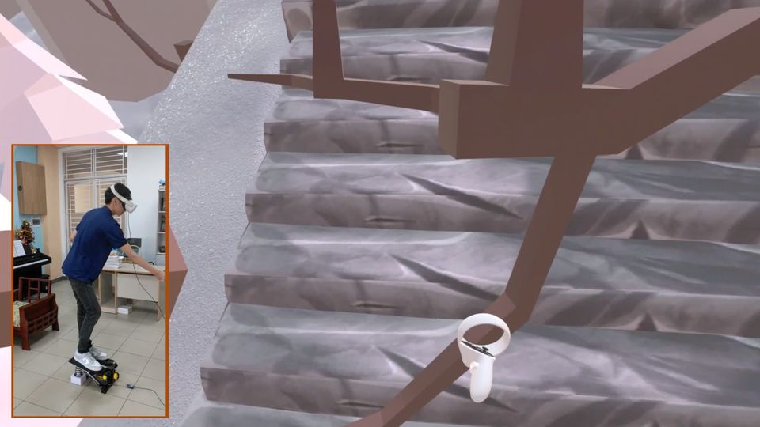
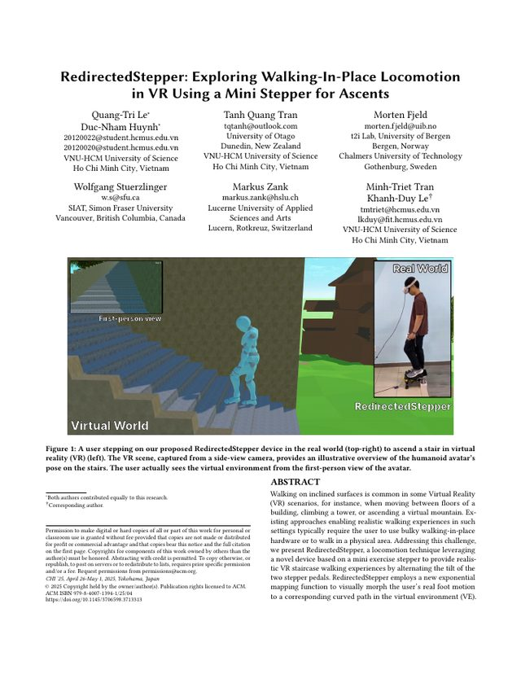

Feels like real climbing
Pressing the pedals gave the effort of a real ascent. RedirectedStepper made walking up stairs feel more realistic than walking in place on flat ground.
CHI 2025 · Yokohama, Japan
Exploring Walking-In-Place Locomotion in VR Using a Mini Stepper for Ascents
*Equal contribution · †Corresponding author
Stairs, towers, mountains: climbing is everywhere in virtual worlds. Yet in VR we usually glide or teleport upward, or need bulky hardware and a large room to truly walk.
RedirectedStepper lets you step your way up on a compact mini stepper, without ever leaving the spot.
In action
How it works
On the stepper, your foot only moves up and down. In VR, that same motion is bent into a natural stair step: lift, reach forward, land. Your virtual foot touches the next stair the moment the pedal reaches its top. Then you press down, and you rise.
Animated illustration. Left: a foot on the stepper pedal rises and falls in place. Right: the same motion shown in VR as a foot arcing up and forward onto the next stair, after which the view rises one step, repeating endlessly.
Illustration, one foot shown. The real system senses each pedal's tilt about 80 times per second and maps it to your virtual foot and viewpoint.

The device
Larger 34 × 17 cm pedals help you feel planted, even when the headset hides your feet.
Compression springs resist every press, so lifting yourself feels like taking a real step.
A motion sensor under each pedal streams its tilt wirelessly to VR, about 80 times a second.
44 × 40 × 23 cm and 7.4 kg. No treadmill, no walking space.
Three worlds
We compared RedirectedStepper with walking in place tracked by a Kinect camera, with twelve new participants in each world, 36 in total.
A long flight of 500 steps. Pushing down on the pedals made the climb feel earned.
Turning all the way up while facing straight ahead in the room caused no discomfort. Some never noticed the turn.
A continuous 30° climb. It worked, but the tilting pedals felt less natural here than on stairs.
Application
A VR exergame built on what we learned. Race up a snowy mountain stairway as fast as you can. Along the way, pick up sticks, throw them at snowmen, and clear obstacles. Each mini-mission doubles as a short rest for your legs.

Pick up sticks
Hit the snowmen
Clear the pathEight players tried it for about 11 minutes each. They turned, threw, and bent down while standing on the stepper, and none raised safety concerns.
What we learned
“I felt like I had actually climbed the stairs because I pushed my foot down.”
Participant 12, straight staircase
Pressing the pedals gave the effort of a real ascent. RedirectedStepper made walking up stairs feel more realistic than walking in place on flat ground.
Discrete steps felt natural. On continuous slopes, the direction of the pedals' tilt was less convincing.
Climbing takes effort, and participants sweated more. Long climbs should build in rest, as SnowRun does.
Video

Paper
CHI ’25 · Proceedings of the 2025 CHI Conference on Human Factors in Computing Systems · Yokohama, Japan
ACM Digital Library Author PDF
Walking on inclined surfaces is common in some Virtual Reality (VR) scenarios, for instance, when moving between floors of a building, climbing a tower, or ascending a virtual mountain. Existing approaches enabling realistic walking experiences in such settings typically require the user to use bulky walking-in-place hardware or to walk in a physical area. Addressing this challenge, we present RedirectedStepper, a locomotion technique leveraging a novel device based on a mini exercise stepper to provide realistic VR staircase walking experiences by alternating the tilt of the two stepper pedals. RedirectedStepper employs a new exponential mapping function to visually morph the user’s real foot motion to a corresponding curved path in the virtual environment (VE). Combining this stepper and the visual mapping function provides an in-place locomotion technique allowing users to virtually ascend an infinite staircase or slope while walking-in-place (WIP). We conducted three within-subject user studies (n=36) comparing RedirectedStepper with a WIP locomotion technique using the Kinect. Our studies indicate that RedirectedStepper improves the users’ sense of realism in walking on staircases in VR. Based on a set of design implications derived from the user studies, we developed SnowRun, a VR exergame application, demonstrating the use of the RedirectedStepper concept.
@inproceedings{le2025redirectedstepper,
title = {RedirectedStepper: Exploring Walking-In-Place Locomotion
in VR Using a Mini Stepper for Ascents},
author = {Le, Quang-Tri and Huynh, Duc-Nham and Tran, Tanh Quang
and Fjeld, Morten and Stuerzlinger, Wolfgang and Zank, Markus
and Tran, Minh-Triet and Le, Khanh-Duy},
booktitle = {Proceedings of the 2025 CHI Conference on Human Factors
in Computing Systems},
series = {CHI '25},
year = {2025},
location = {Yokohama, Japan},
publisher = {Association for Computing Machinery},
address = {New York, NY, USA},
isbn = {979-8-4007-1394-1},
numpages = {17},
doi = {10.1145/3706598.3713313},
url = {https://doi.org/10.1145/3706598.3713313}
}